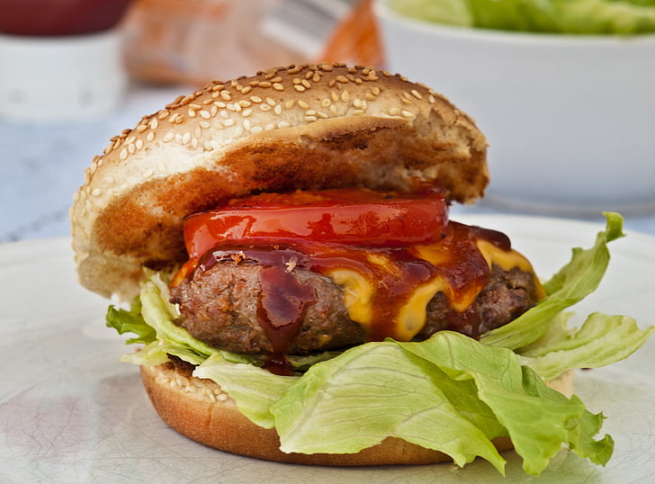

"That, is veggie bacon. Believe it or not; zero cholesterol and you won't even taste the difference." - Skyler White (Mr. White wifey)
This is an alternative vegan version of an American classic, a vegan bacon cheeseburger.
Since when did vegan have to mean it was bad? This recipe will prove to all your meat-loving friends that veggie-food can be exciting!
Add a little Oil (as needed) to a hot pan.
Add the Vegan Burger Patty (1) and Vegan Bacon (2 slices) to the pan.
Top with some Applewood Smoked Salt (to taste) and cover the pan.Once beastly beyond meat slider is warm, top with some Vegan Cheddar Cheese (to taste) and cover the pan again.
Before the burger and bacon are cooked, add the Hamburger Bun (1) to the pan, and recover.
Serve, and enjoy!